從醫療必要性、診斷書與收據，讀懂理賠結果如何形成。
剖腹產理賠的核心，是醫療必要性。當原因、文件與花費能串在一起，就能清楚看見保障如何回應風險。
安胎不是單純休息，而是替胎兒爭取成熟時間。當症狀持續或無法靠休息緩解，醫師可能安排住院觀察、產前照護與藥物處置。
診斷書會留下週數、症狀、住院原因與醫師處置。這些內容能幫助理解：這次住院不是單純休息，而是有醫療上的必要性。
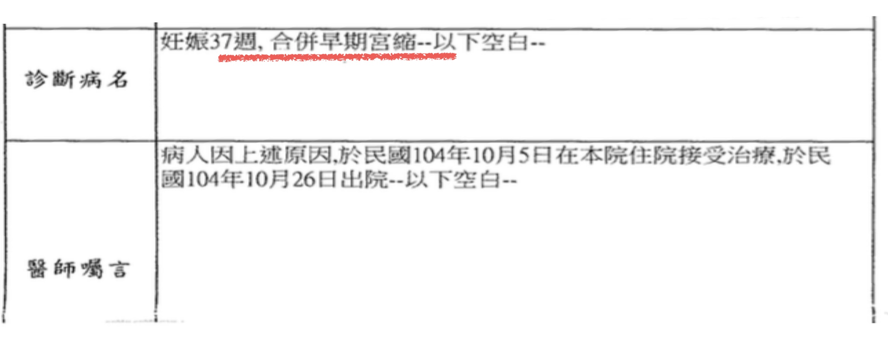
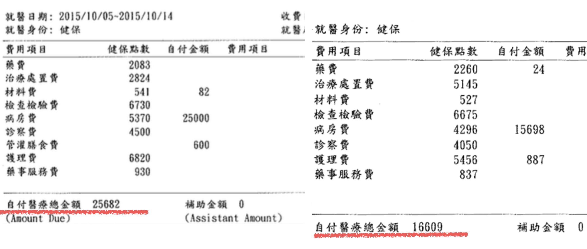
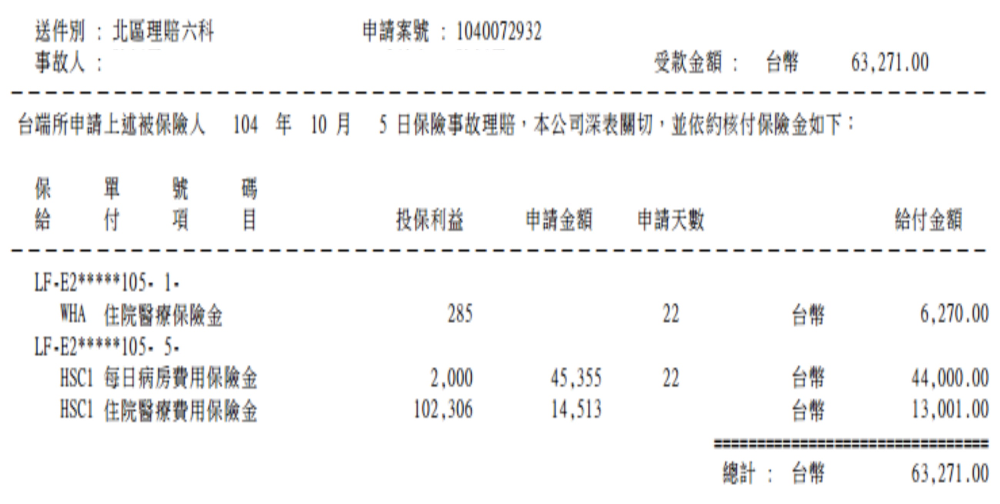
本案醫療支出合計 42,291 元，理賠結果為 63,271 元。從診斷原因到費用明細，可以清楚看見住院與處置項目如何被保障回應。
給付結果依條款、投保內容與保險公司核定。
當胎位提高自然產風險，醫師處置理由會成為判讀診斷書與理賠結果的關鍵。
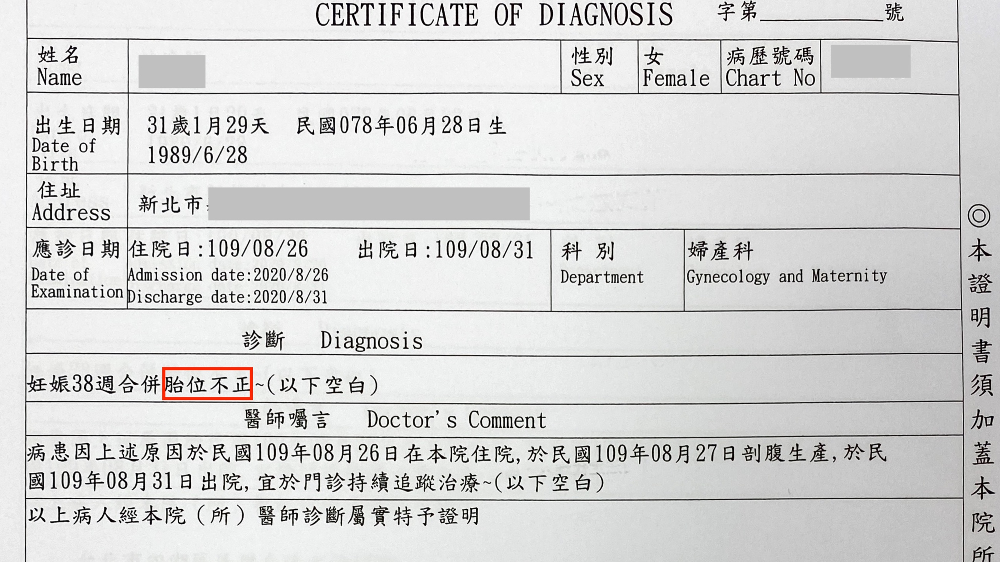
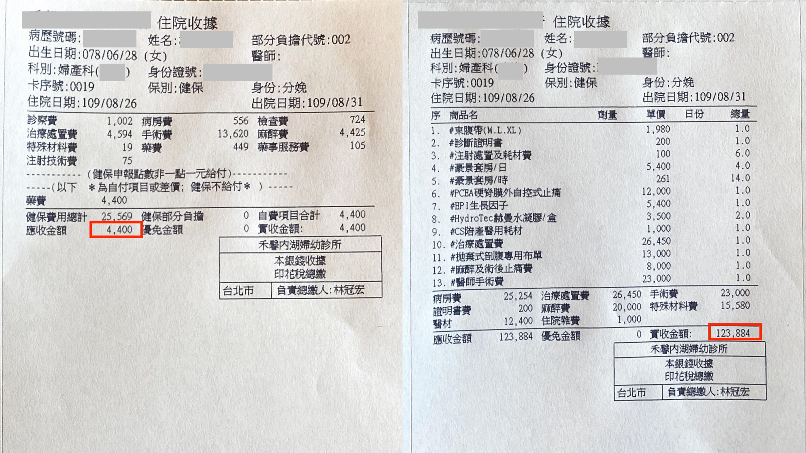
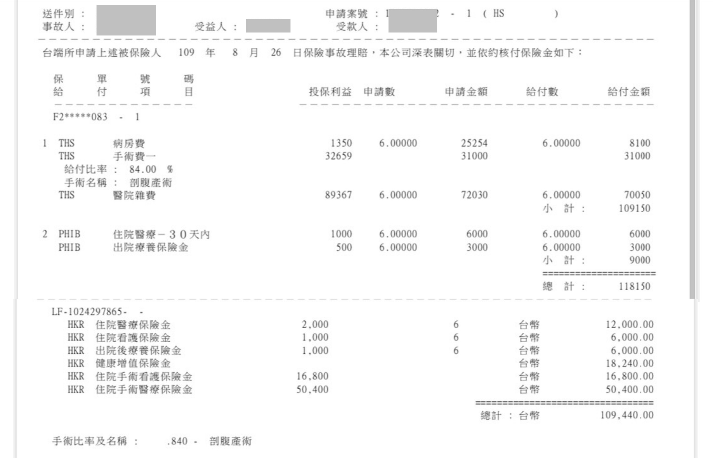
本案總花費 128,284 元，理賠金額 227,590 元。胎位不正導致剖腹產處置，相關病房、手術與住院給付在理賠明細中逐項呈現。
給付結果依條款、投保內容與保險公司核定。
同樣是剖腹產，住院天數、自費項目與投保內容不同，最後呈現的花費與理賠也會不同。
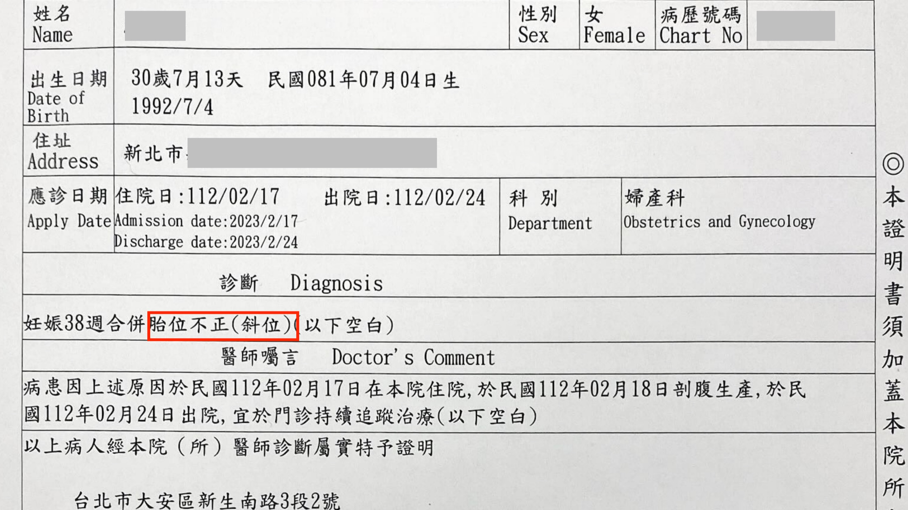
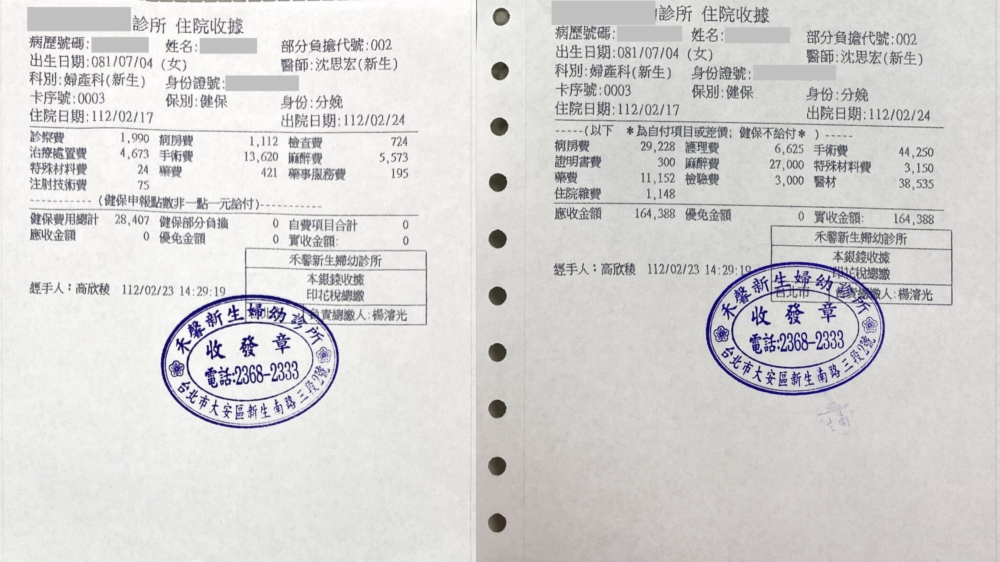
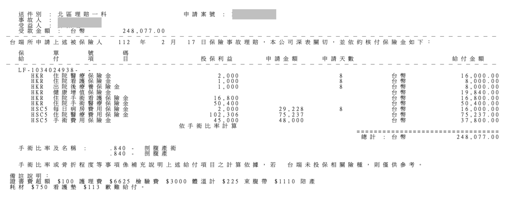
本案總花費 164,388 元，理賠金額 248,077 元。醫療文件確認剖腹產原因，費用與給付明細對照後，保障效果更直觀。
給付結果依條款、投保內容與保險公司核定。
產程不順時，剖腹產常是為了降低分娩風險；診斷書會交代醫師判斷與處置原因。
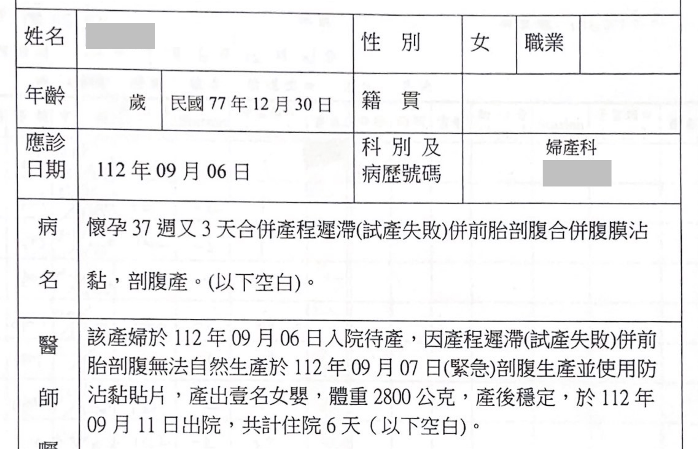
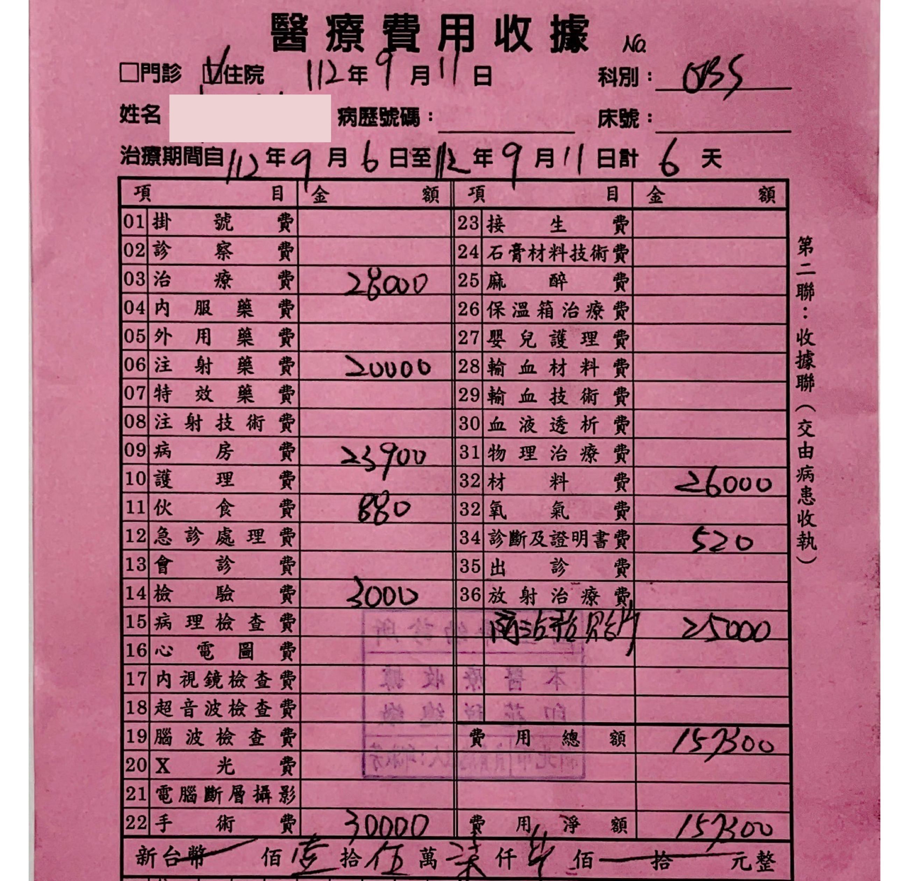
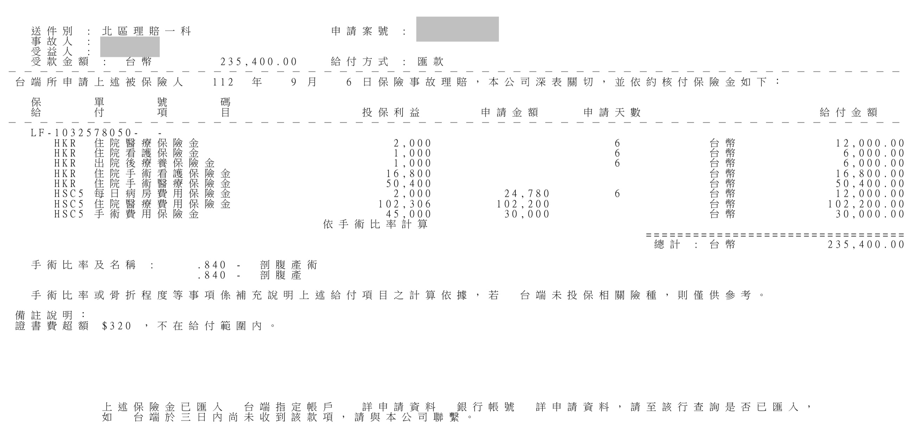
本案總花費 157,300 元，理賠金額 235,400 元。產程遲滯轉為剖腹產後，收據與理賠明細呈現保障對醫療支出的實際支援。
給付結果依條款、投保內容與保險公司核定。
當文件能證明醫療處置與費用明細，理賠結果就能更具體地呈現保障價值。
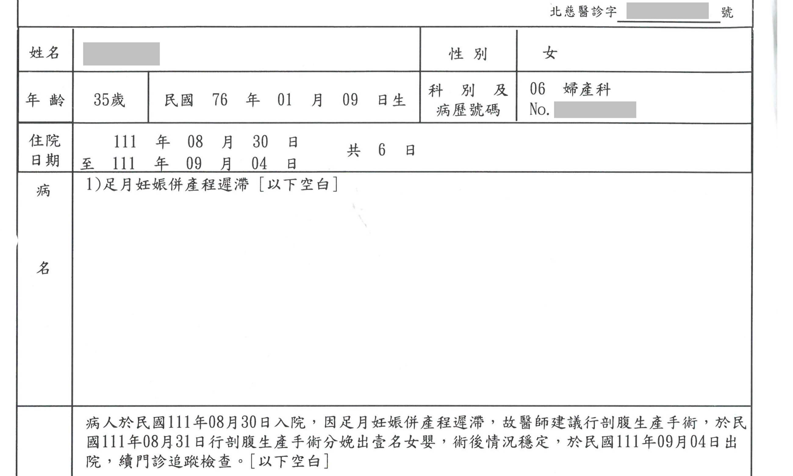
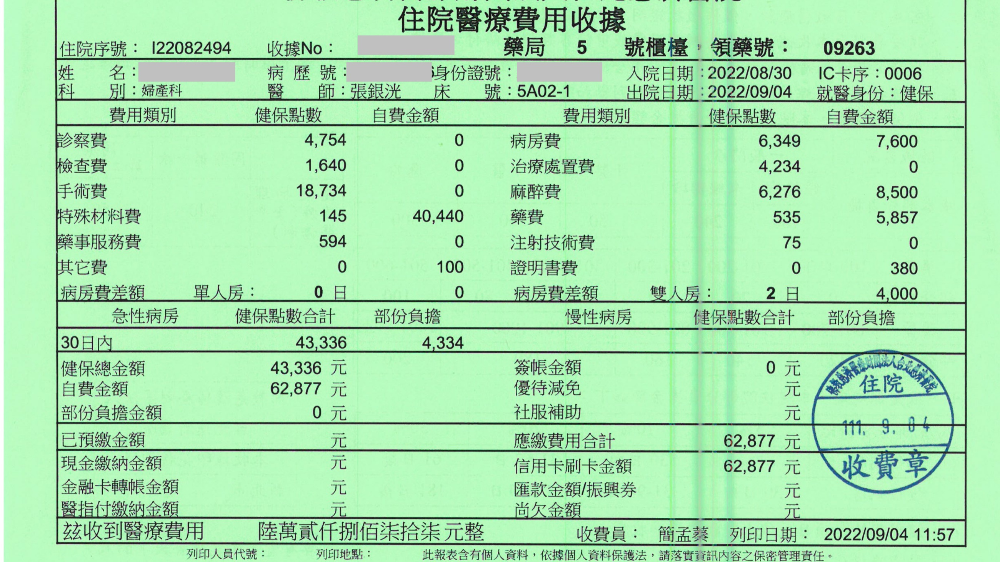
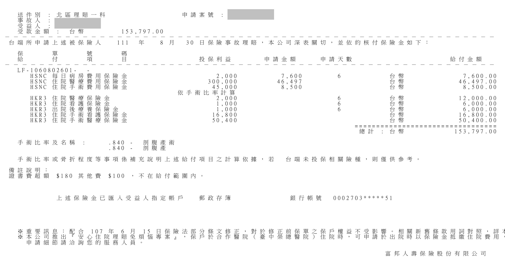
本案總花費 62,877 元，理賠金額 153,797 元。當診斷原因、住院紀錄與費用明細完整，理賠結果能更清楚反映保障價值。
給付結果依條款、投保內容與保險公司核定。